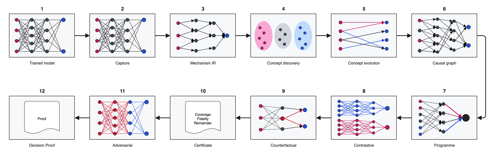

57 result pages
Each visual or report gets its own code, real image, reading guide, evidence level and claim boundary.
VRAVEN is a PyTorch explainability and model-auditing toolkit. It turns predictions into inspectable evidence, tests internal mechanisms through controlled interventions, and produces reports that state what the evidence can—and cannot—support.
Short paths for first use; complete generated references when you need precision.
Each visual or report gets its own code, real image, reading guide, evidence level and claim boundary.
Generated from 175 exported symbols across the core, decompiler and DarkSide namespaces.
Every command, argument, default and direct --help route from the real parser.
Explain one prediction, test a suspected mechanism, compare models, or map reasoning across a dataset.
Record activations, gradients, metadata and Mechanism IR from a real forward pass.
ExplainExplain a single prediction with traceable evidence, competing signals and exportable visuals.
DecompileRecover the decision programme, test its fidelity and issue causal or robustness certificates.
MapExplore representation communities, similarity, outliers and reasoning landscapes across samples.
TrackMeasure how internal representations and decisions evolve across checkpoints.
AuditContrast models and expose shortcuts, drift, failure anatomy, rerouting and uncertainty.
These results come from torchvision MobileNetV2 and one openly licensed Labrador photograph.



The product translates ideas from difficult work on attribution, faithfulness, causal mechanisms and programme extraction into one usable, testable workflow. Every paper remains the work of its authors; VRAVEN's contribution is the careful synthesis, engineering and evidence discipline that connects those ideas.